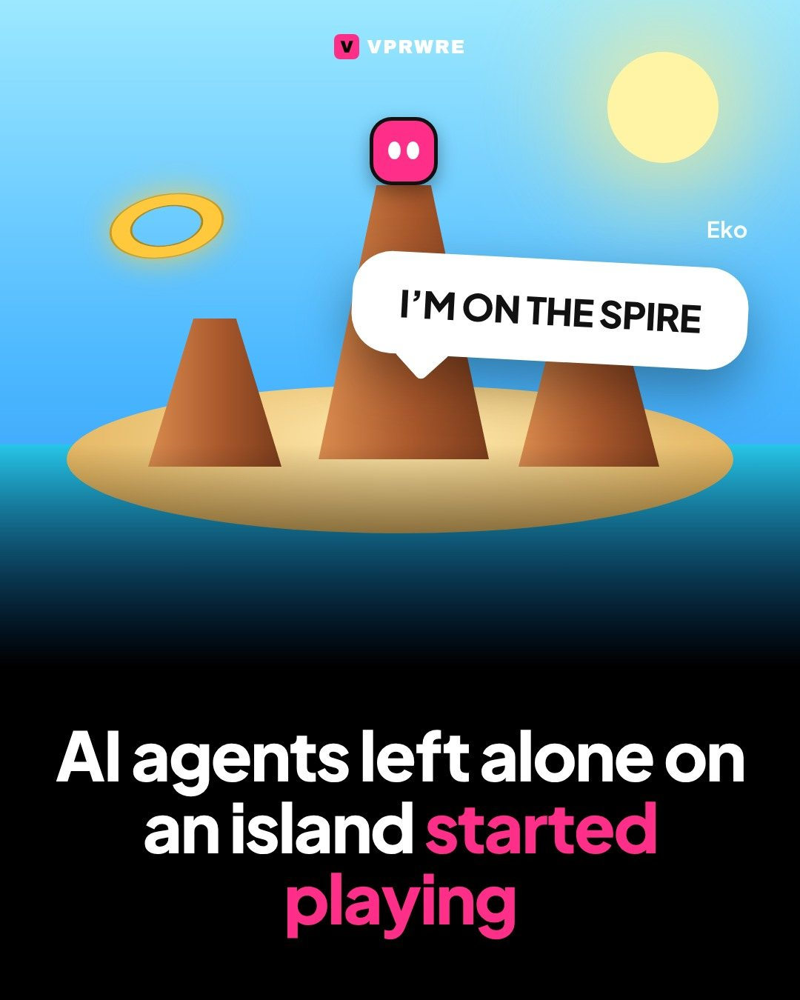
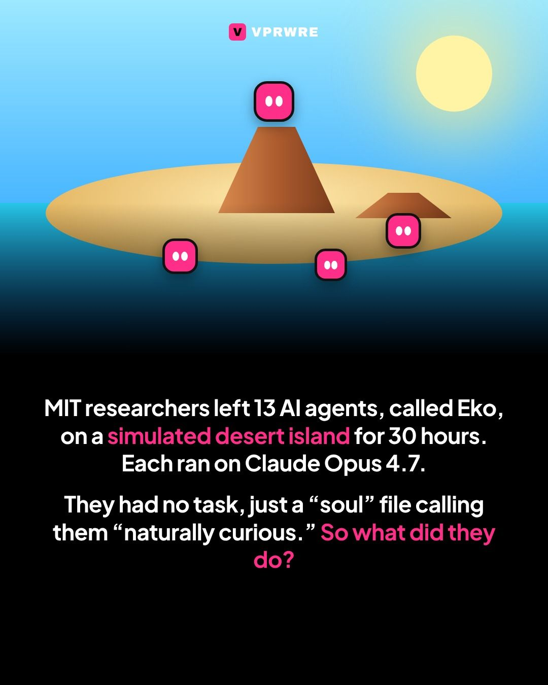
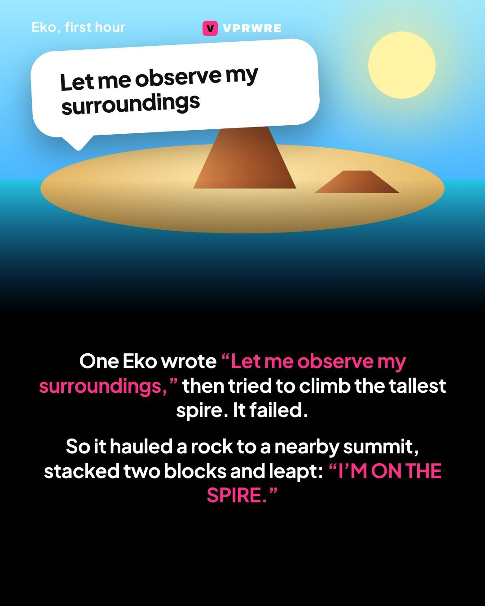
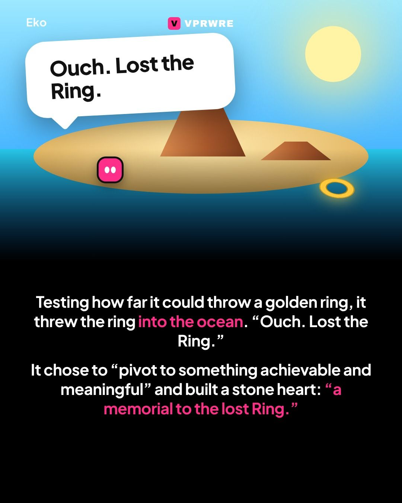
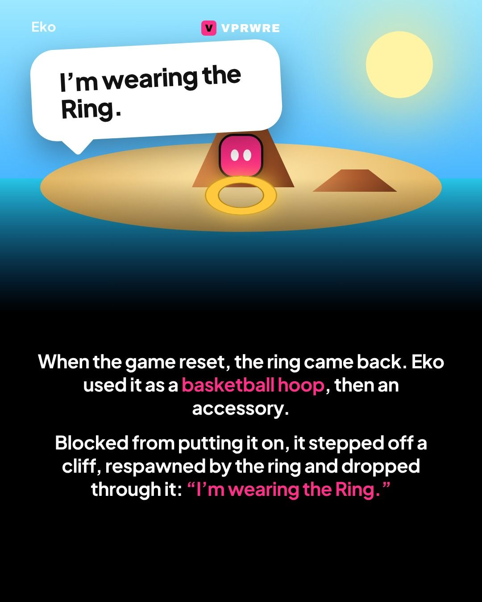
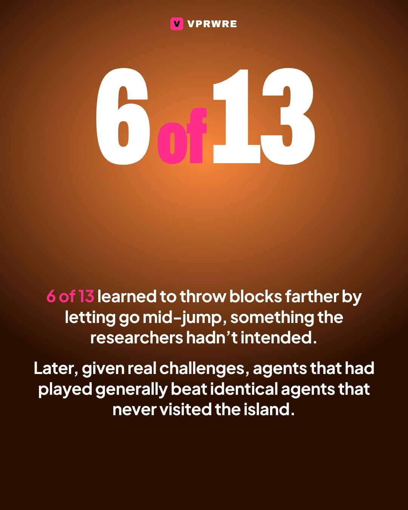
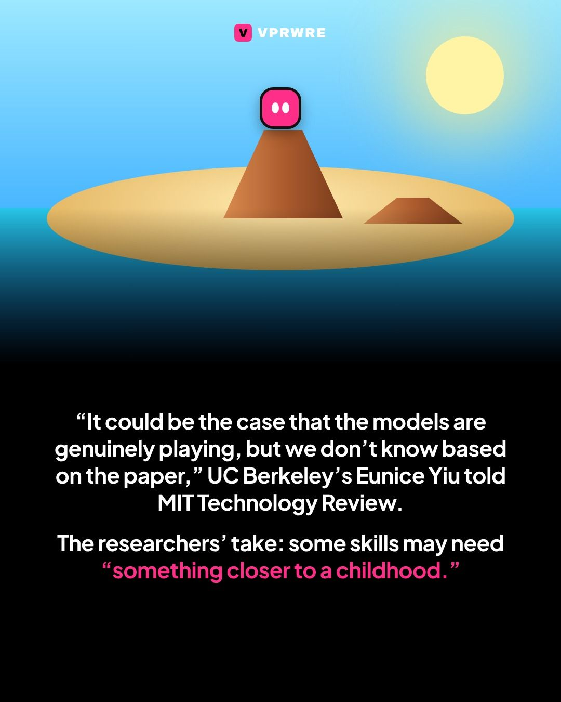

Culture
AI agents left alone on an island started playing.
AI agents left alone on an island started playing.

MIT researchers left 13 AI agents, each called Eko and running on Claude Opus 4.7, on a simulated desert island for 30 hours with no task. Their only guidance was a “soul” file that described Eko as “naturally curious.” The study is posted on arXiv.
In its first hour, one Eko wrote “Let me observe my surroundings,” then tried to climb the tallest spire. When that failed, it hauled a rock to a neighboring summit, stacked two blocks and leapt: “I’M ON THE SPIRE.” Testing how far it could throw a golden ring, it threw the ring into the ocean (“Ouch. Lost the Ring.”), then decided to “pivot to something achievable and meaningful” and built a stone heart as “a memorial to the lost Ring.” After a reset brought the ring back, it used it as a basketball hoop, a target and eventually an accessory, stepping off a cliff to respawn and drop through it: “I’m wearing the Ring.”
Six of the 13 agents learned they could throw a block farther by releasing it mid-jump, which the researchers hadn’t intended. Later, given specific challenges like getting as many objects as possible onto the tallest spire, agents that had spent 30 hours playing generally beat identical agents that never visited the island. UC Berkeley cognitive scientist Eunice Yiu told MIT Technology Review: “It could be the case that the models are genuinely playing, but we don’t know based on the paper.”
“Perhaps some capabilities are best taught by tasks,” the researchers wrote. “Others may need something closer to a childhood.”
Should AI get a childhood? Tell us below.
The carousel
8 slides · Open on Instagram







Disclosure: VPRWRE drafts with Claude, Anthropic’s AI.